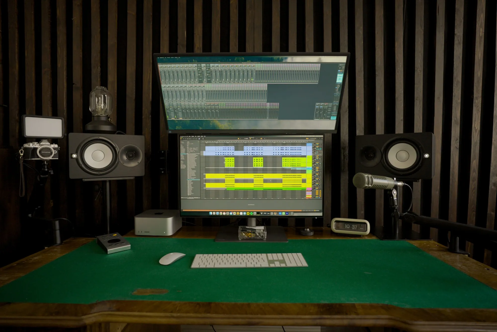
Signal Recording & Processing
Recording, mixing and producing in my own studio, and the cables behind big shows.
My studio
During my studies I leant hard on the audio side. I built my own studio and made my recordings and productions in it: I recorded other artists, mixed bands and produced my own music.
Next to the studio I worked on stage, at Theater an der Wien and on the audio crew of big concerts and events.
- Recording
- Recorded other artists in my studio.
- Mixing
- Mixed bands and other artists.
- Production
- Produced my own music in Ableton Live.
- Max/MSP
- Built my own patches in Max/MSP.
- Stage and audio crew
- Stage and audio work at Theater an der Wien, audio crew at concerts and events in Ernst Happel Stadion and Stadthalle Wien.
The studio
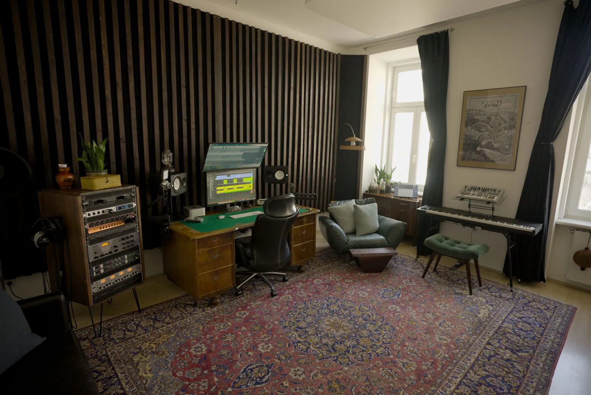
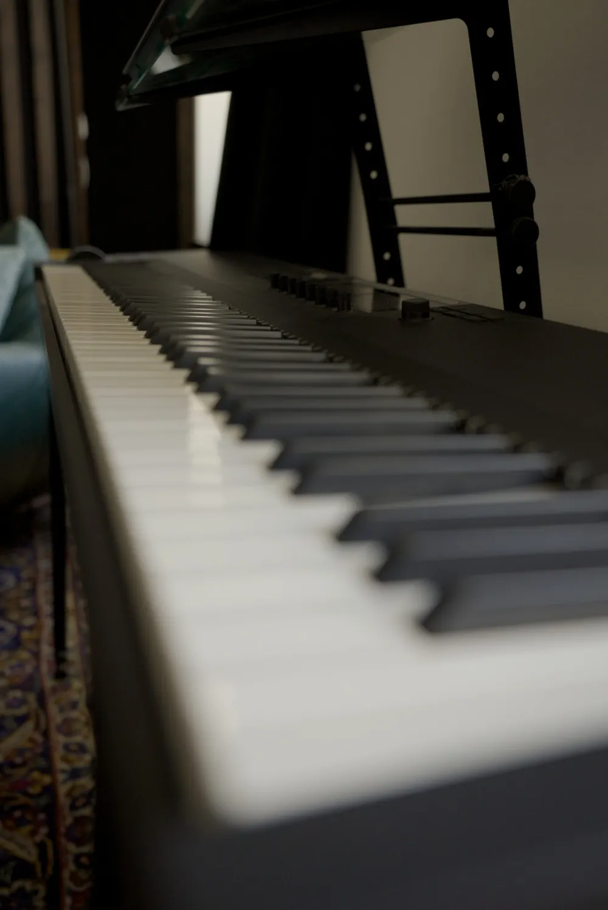
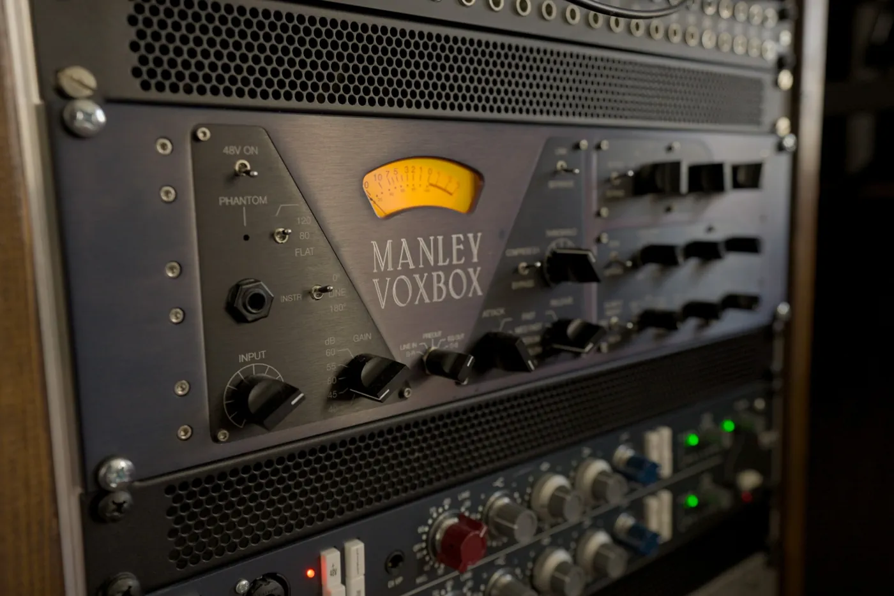
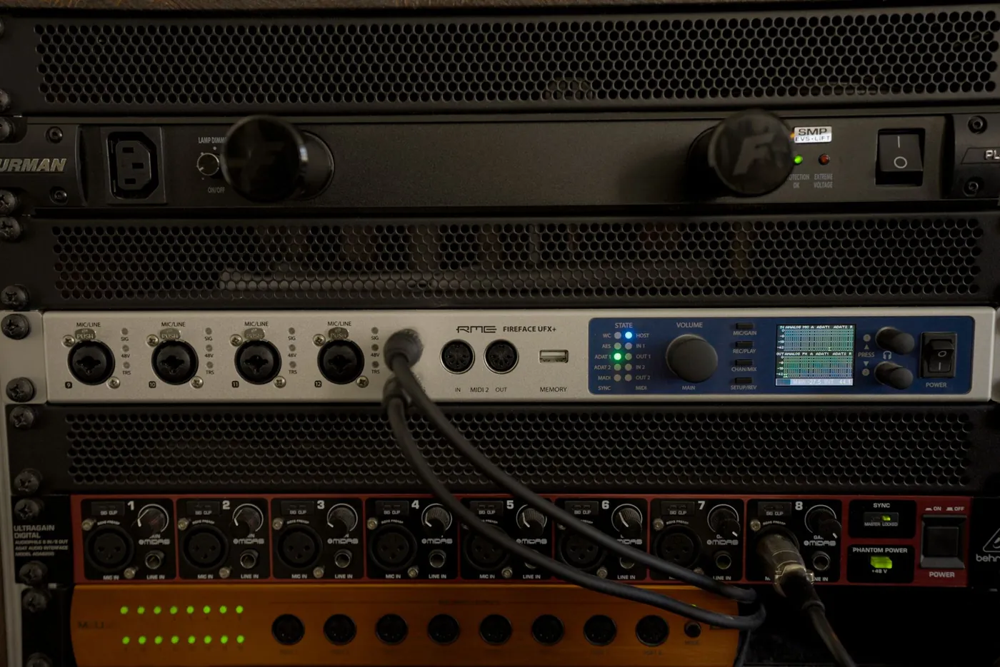
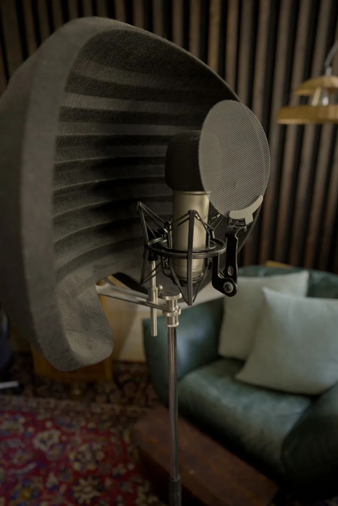
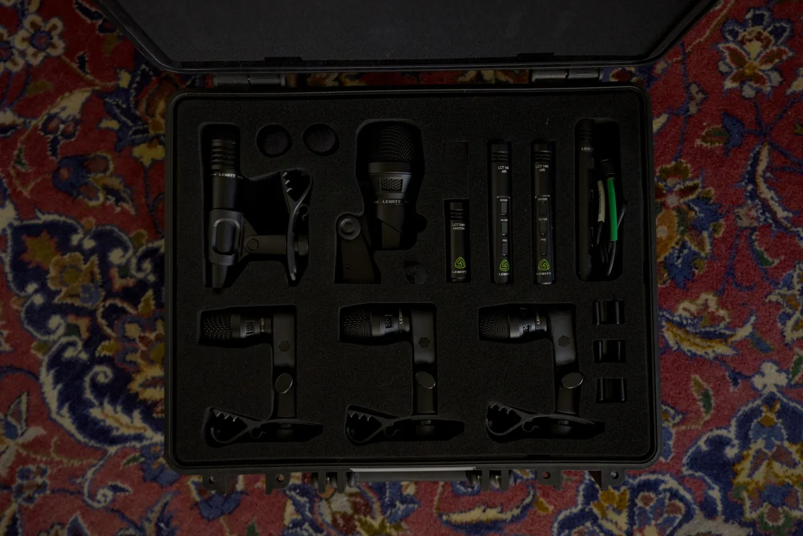
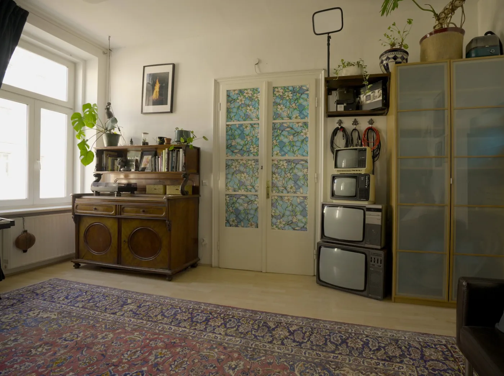
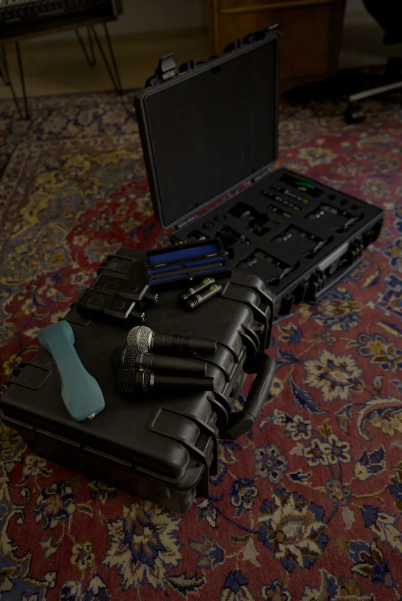
Ableton Live and Max/MSP
Ableton Live was where my productions came together. In Max/MSP I built my own patches.
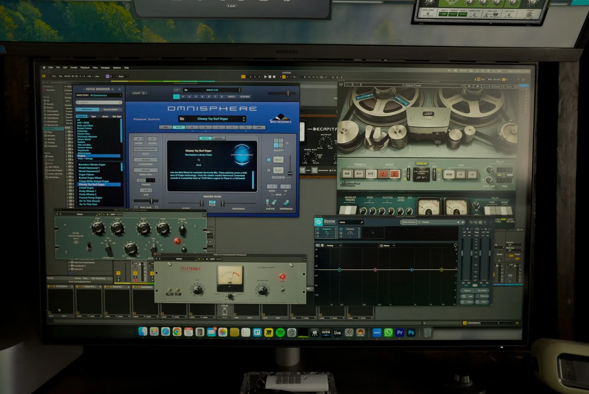
Spatial audio
- 1Ear-level speakers around the listening position
- 2Height speakers on a ring above it
- 3Listening position at the desk
- 4Acoustic treatment on walls and ceiling
- Format
- Dolby Atmos
- Monitors
- Genelec
- Layers
- Ear level and height
Stage and events
Theater an der Wien
During my studies I worked for a subsidiary at Theater an der Wien, on stage and on audio: changes, building and striking, cabling, microphones and speakers.
Artlogic
With Artlogic I was on the audio crew for big concerts and events, among them at Ernst Happel Stadion and Stadthalle Wien: cabling and setting up the sound systems.
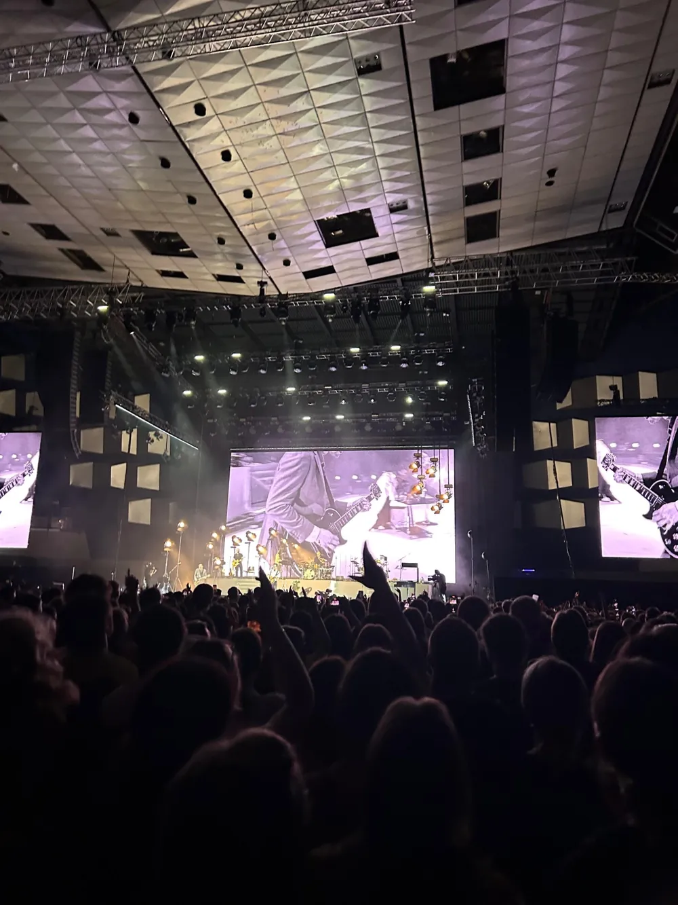
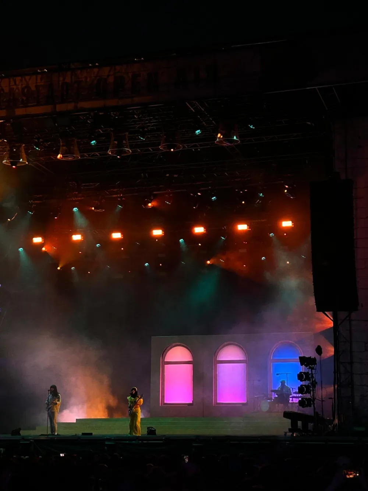